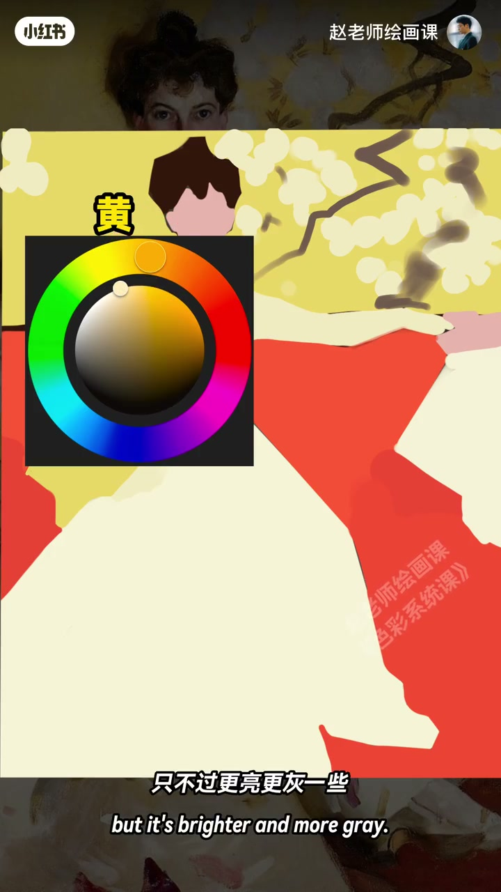
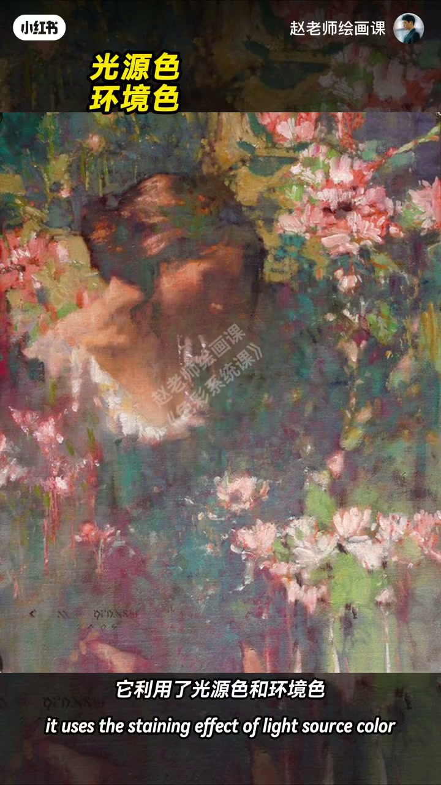
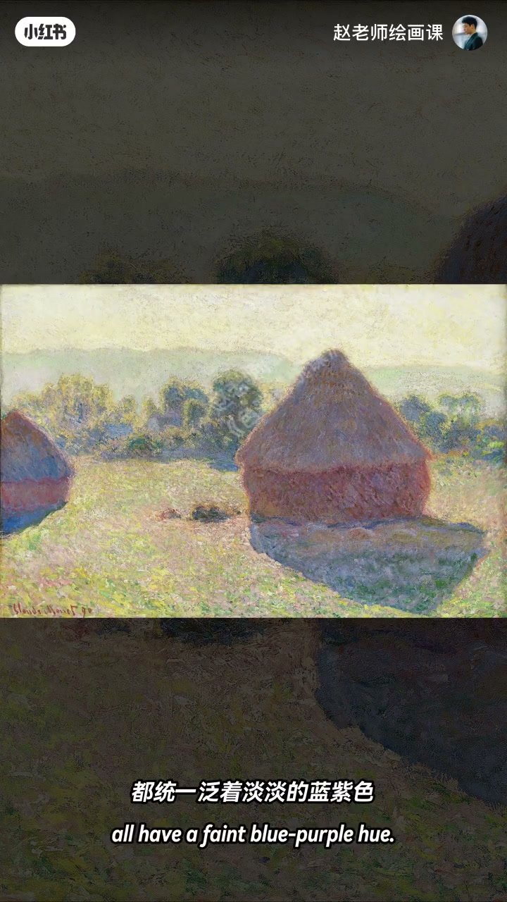
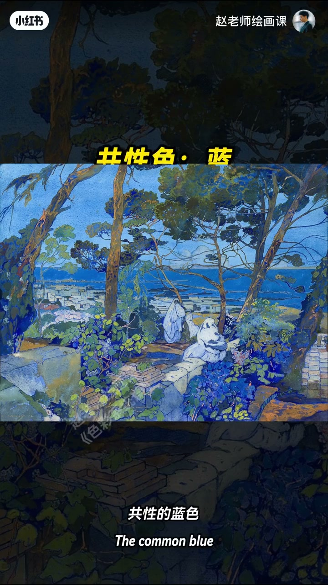

内容要点
局部挺好整体各玩各的，因为还没统一色调。三招：①控制面积——萨金特去细节后黄约六七成、红二三成、点缀一二成，记主导／辅助／点缀按6:3:1或7:2:1，穿搭室内同理，固有色也可主观改。②光源色与环境色——亮部被暖黄浸染、暗部融蓝紫，印象派与电影同招，莫奈暗部淡蓝紫。③增加共性色——各物固有色共泛紫／蓝／棕红。综合练习可见三法叠用；下期另有三招。
知识结构
6:3:1／7:2:1；主观调色就面积。
亮暖暗紫；莫奈统一暗部。
共倾向色；综合三法。
统一色调用面积比、光/环境染色或共性倾向，三法可叠，别让每块固有色各自为政。
00:00-01:15方法一：面积占比
局部颜色好、整体各玩各的，答案是还没学会统一色调。方法一控制色彩面积占比。萨金特人物去掉细节只剩色块：最大在衣服，提到色相环也是更亮更灰的黄，故黄实际占六到七成，红二三成，脸粉与头发点缀约一二成。
记住主导色、辅助色、点缀色按6:3:1或7:2:1分布就易统一；穿搭与室内设计最常用。若模特裙子是淡绿，要学会像萨金特主观调整。00:35 比例标注。

01:15-02:35方法二：光源色与环境色
棕橙黄绿粉蓝紫为何和谐？利用光源色与环境色染色：发亮橙黄、暗蓝紫；肤亮发黄暗紫灰；植亮黄绿暗蓝绿含蓝紫；花粉暖粉暗紫红也有蓝紫——指向暖黄光线浸染所有亮部，蓝紫环境融入所有暗部。
电影常用此招渲染情绪；印象派皆然。莫奈让天空山、树草地与麦垛边缘被正午暖阳染黄，暗部统一泛淡蓝紫。01:30／02:30 证据。


02:35-04:09方法三：共性色与综合
增加共性色：一幅所有固有色明显泛紫；另一幅共性蓝让氛围幽静神秘；室内想传统复古可让固有色参入棕红。综合练习可见面积上蓝灰为主黄为辅，且到处有灰黄共性；稍难例中绿主导、橙黄辅助、红点缀，受光泛黄暗部泛蓝，固有色多含橙黄。
三招讲完，下期另三招实战。作业：统一不好的照片或画发评论区在线问诊。02:50 共性色画面。

完整转录（112段）
以下文本由 Whisper medium 模型自动转录，可能存在少量识别误差，已尽可能修正。
为什么你局部颜色画的挺好
一到整体
就像各玩各的
答案很简单
你还没有学会统一色调
今天啊
赵老师教你三个办法
让你彻底拿捏画面的色调
双打一 控制色彩的面积占比
我们来看萨金特这副人物
去掉所有的细节只剩色块
哪个颜色面积最大
在于这块衣服
提取到色相环上
你会发现它也是一种黄色
只不过更亮更灰一些
所以黄色实际上占了画面的6到7成
红色是2到3成
还有脸上的粉色和头发的点缀色
大概1到2成
记住这个规律
主导色 辅助色 点缀色三者
按照6比3比1
或者7比2比1的比例来分布
色彩就很容易统一
这穿搭和室内设计
都是最常用的方法
试想一下
如果当时这个模特儿穿的裙子是淡绿色
你就要学会像萨金特这样
主观的来调整它
方法二
要利用好光源色和环境色
来看这幅画
棕 橙 黄 绿 粉 蓝 紫
这么多颜色放在一起这么和谐
利面就在于它利用了
光源色和环境色的染色效果
棕色头发的亮部明显泛着橙黄
暗部泛着蓝紫
肉色的皮肤
亮部也发黄
暗部也泛着紫灰
绿植的亮部是黄绿
暗部是蓝绿
也含有蓝紫的成分
粉花的亮部是暖粉色
暗部是紫红
也有蓝紫
这些都指向了一个事实
暖黄光线
惊染了所有物体的亮部
而蓝紫色的环境色
融入到了所有物体的暗部
在电影色彩中
经常用这一招来渲染情绪
其实所有印象派的画家
他们都是用这一招来统一色彩的
莫奈让天空和山
树和草地
还有麦杜的边缘
都被正午的暖阳染黄
暗部都统一泛着淡淡的蓝紫色
光绿色的和谐交响曲就此拉开
最后一个办法增加共性色
比如这幅画
所有物体的固有色里
都泛着明显的紫色倾向
你说他们能不和谐吗
再来看这幅
共性的蓝色
让整个画面氛围
变得幽静和神秘
在幽暗设计中
想要营造传统又复古的气质
可以让固有色里
都参入棕红色
综合练习
来猜猜这幅画都用了哪几种
能看到面积上
蓝灰色是主的
黄色辅助
还有共性色
到处都有灰黄色的影子
再来一张
稍微难一点的
面积上
应该是不同的绿
这样的主导
橙黄是辅助
红色是点缀色
物体的受光部分
都明显的泛着黄
而暗部是泛蓝
而且几乎所有物体的固有色里面
都含有橙黄色的成分
好了
以上就是今天
统一色调的三种常用办法
如果你还没有完全理解
下一期
我还准备了
另外三种实战技巧
我就不幸教不会大家了
最后
我们来留一个作业
把你统一不好色彩的照片或者画
发到评论区
我们来个在线问证
同学们
下期再见
拜拜